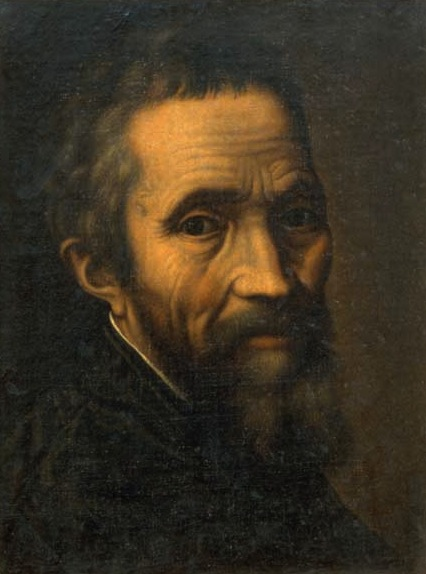

<--Back
Michelangelo

본명: 미켈란젤로 디로도비코 부오나로티 시모니
출생: 1475년 3월 6일, 피렌체 공화국 카프레세
사망: 1564년 2월 18일 교황령 로마 (88세)
이탈리아 르네상스 시기의 조각가이자 건축가, 화가 그리고 시인.
흔히 레오나르도 다 빈치, 라파엘로 산치오와 함께 르네상스를 대표하는 거장 중 한 명으로 불린다.
다방면에서 걸작들을 남겼는데, 본업인 조각에서는 다비드 상, 피에타 상이 있으며
회화에서는 시스티나 소성당에 천지창조와 최후의 심판 등을 남겼고, 건축에서는 성 베드로 대성당을 계획했다.
 Michelangelo
Michelangelo